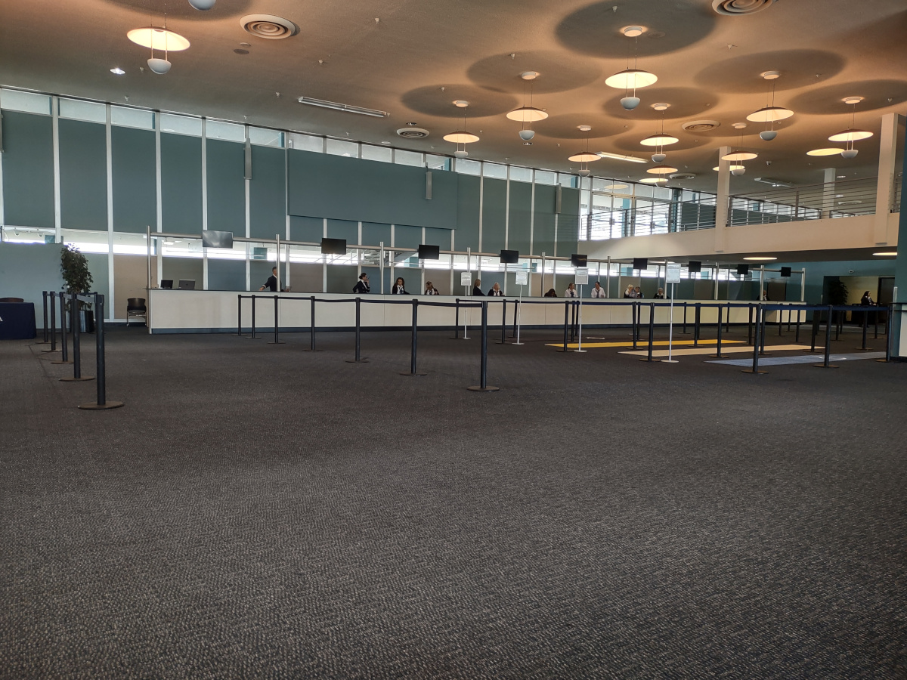

Becky and I are on a seven night cruise from Los Angeles on Oceania Regatta (670-passengers, built in 1998). The cruise will stop at Catalina Island, San Francisco (overnight) and Ensenada, Mexico; and we will have two sea days. This will be our first cruise on Oceania Cruise lines.
The drive to the port of San Pedro took a little over two hours to cover the 82 miles from Ventura to the port in San Pedro during the weekday morning traffic. Google maps was reporting two accidents along Highway 101 in the San Fernando Valley and suggested an alternate route along Highway 1, which we took. The traffic was light until we reached Malibu and from there it was congested until Santa Monica.
We arrived at the cruise terminal parking lot around 10:20am and the lot was mostly empty, which was surprising. The Regatta was the only cruise ship in port and she had just finished a 13 day cruise from Vancouver to Los Angeles. We unloaded the car and rolled our bags to the terminal. We dropped our one check-on suitcase with the porters, fingers crossed that we would see it again later in the day. We’ve disembarked at the port of San Pedro many times before, usually at terminal 92, but this time our ship was docked at terminal 93 and the terminal layout is a bit different. We each had a small roll-on suitcase as our carry-on, and after security and x-ray of our bags, we took the elevator upstairs to the second floor to check-in. We were shown to a seating area to wait for check in to start at 11am.
No one at the check in counters. At 10:45am the check in desk started to get set up. Waiting for our group to be called.
Most of the passengers were older than us. I think anyone we saw that was our age or younger, were adult children traveling with their parents.
The boarding is by cabin category - penthouse suites and above are the first group, the second group is concierge verandas followed by all other staterooms. Concierge veranda cabins are just regular balcony cabins with some added extras, such as, boarding in the second group, free laundry service and a welcome bottle of Champagne. The only reason to board early as possible is to secure additional reservations in the specialty restaurants, or so we thought.
The first group called was for guests in owner and vista suites. Only about six guests got up and the second group was for penthouse suites, which was our group. Check in took a little bit of time since the girl wasn’t familiar with the software and couldn’t scan our passports. After getting our ship key cards, we went to have our carryon bags x-rayed and walk through the metal detectors. From there we were able to board the ship.
Our first stop was to the restaurant reservation desk to inquire about getting an additional restaurant reservation. Contrary to what we read on the internet, additional speciality reservations are not allowed.
The choices for embarkation lunch are either at Waves Grill or Terrace Café. Waves Grill is the pool deck burger bar and Terrace Café is the buffet. We headed to Waves Grill to get a table. The Waves Grill and Terrace Café are very near each other so food can easily be carried from one place to the other.
Becky ordered the Surf & Turf sandwich - grilled Florida lobster medallions, sliced black angus filet mignon, tomato, toasted ciabatta, roasted garlic jus and remoulade dipping sauce. On the side came french fries and coleslaw.
I ordered the Oceania Cuban sandwich – slow roasted marinated pork, ham, Swiss cheese, dill pickles, mustard, grilled Cuban bread with french fries.
Since we didn’t have much for breakfast before leaving home, we were somewhat hungry. Becky thought her sandwich was just so-so. It was kind of hard for her to eat as a sandwich and she didn’t care for the bun. So she just scraped the lobster and filet mignon off the bread and ate the filling by itself, which she liked. So she ordered a second sandwich without the bread. I had a taste of lobster and filet mignon and they were good. My Cuban sandwich was good.
Since our cabins were not ready, we decided to wait at Waves Grill, so I then ordered a strawberry milkshake - two scoops of whole milk ice cream and whipped cream. Then I walked over to the buffet to get a dessert, which Becky and I shared. By then it was about 12:30pm and Becky went off to explore while I waited with our carry on bags at the Waves Bar.
She came back only after a few minutes and said the doors to the cabin hallways were open, so we took that as a sign that our cabin was ready even though no announcements had been made. Outside our cabin we found our checked luggage waiting for us. Now it was time for us to check out our cabin, unpack and organize our stuff.
Later, as we went out to explore the ship we met our butler, Richard, in the hallway along with our cabin attendant, Karen. The ship is not very big, so it didn’t take long to visit the library, casino, card room, internet office, Horizons lounge, spa. We also stopped by reception to inquire about some missing on board credit. We need to make a trip back to the room to get a printout from the booking agent showing our amenities, so that the office could follow up and make an inquiry back to headquarters.
In the afternoon, we ordered some room service snacks to have with our champagne. We ordered the Spinach and Artichoke Dip – crème fraiche, tomato salsa and tortilla chips; and a cheese plate – chutney, bread, crackers. The champagne was good, the nicest I’ve had in a long time. Often we have a bottle of bubbly waiting in our cabin when we check in, but it is usually something cheap, so Becky mixes it with OJ and I don’t even bother drinking it.
Dinner was in the Grand Dining Room which is what the main dining room is called on this ship. Dinner service started at 6pm and guests started to line up about 10 minutes early. When we got into line, there were about 20 people ahead of us. Menus change daily with a choice of 13 appetizers, soups and salads, 9 dinner entrées and 7 dessert items. In addition there are three suggested course pairings of the appetizer, second course, entree and dessert with a different theme each night. There is the Food & Wine pairing, the Global Cuisine lineup and the Aquamar Vitality Cuisine lineup. If you order the food and wine pairing, you don’t have to get the wine. These suggested pairings are a nice way to try different themed menus without having to think about things too much and experience items that I would not normally gravitate to. The Aquamar Vitality Cuisine consists of vegetarian selections and other plant-based dishes similar to a Mediterranean diet; and only for this line up are the calories, fat grams and grams of fiber listed. All the menu items have a little symbol next to the description which indicates if it is lacto-ovo vegetarian, plant-based or no-sugar-added.
Earlier in the day, when we were out exploring the ship, we took some photos of the dining room.
Becky ordered the following … Appetizer: chilled shrimp – horseradish spiked cocktail sauce Soup & salad: cream of cauliflower – with chicken quenelles. Didn’t get a photo of the soup. Entrée: Pork tenderloin medallions – asparagus, crabmeat, hollandaise sauce, gratinated polenta Dessert: vanilla soufflé with a cup of decaf Cappuccino.
Becky didn’t like her entree that much. She also didn’t care for the dessert souffle. She gave it a rating of 4 out of 10 forks and didn’t finish her dinner or dessert.
My dinner order was … Appetizer: Roasted butternut squash – arugula, black radish, mango, hearts of palm Soup & salad: Sicilian salad - baby greens, onions, tomatoes, Italian black olives, capers, red wine vinaigrette Entrée: Tamarid-braised hamachi fillet – sweet ginger sauce, steamed rice, stir-fried vegetables Dessert: Mango sweet sticky rice with decaf Cappuccino
I liked my dinner selections, I gave it 7 out of 10 forks. The roasted butternut squash was very nice and the pairing with the mango was good. The salad was typical. The fish for the main course reminded me of snapper. I didn’t care for the mango sweet sticky rice and I only ate half of it. I ordered it because I wanted to try new items. Besides, if I wanted more, I could always visit the buffet for my second dinner.
After dinner we went to the show, called, ‘Broadway in Concert Starring the Regatta production singers, … lullabies of Broadway’. The performance was good and the singers were excellent. We didn’t know too many of the songs.
Our cabin is a Penthouse Suite on deck 8 and has an advertised size of 322 square feet. The width of the cabin is about 4 feet wider than a standard balcony cabin which allows for a desk, chair and storage on the wall opposite from the bed while leaving ample room to walk around the bed. The closet is by the entry and has three doors with space for hanging clothes, some shelves and a room safe large enough to hold a laptop. In the closet are cotton bathrobes, slippers and cashmere lap blankets which can be used on the veranda during cold weather.
The bathroom has a shower stall, one sink with counter space on each side and storage behind the mirrors. The size of the bathroom is small and really only one person at a time can use the bathroom. The bath amenities are by Bulgari, which are the body wash, hair shampoo/conditioner and moisturizing lotion. I’m not a fan of the Bulgari products since I don’t like their scent.
Outside the floor-to-ceiling windows and sliding glass door is a balcony with two chairs and a small table. The deck chairs can recline and are comfortable. The large windows that frame the ocean side of the cabin provide lots of light and nice views.
Also in the room is a television with on demand movies, ship’s information (map, weather, route, speed etc.) and our guest account balance.
When we arrived at our cabin on the first day a bottle of Champagne was chilling in the ice bucket along with a complimentary Oceania Cruises logo tote bag.
We are bringing two bottles of wine and small containers of gin and bourbon from home. Oceania allows guests to bring up to six bottles of wine onboard to enjoy in their stateroom; or guests can pay a corkage fee and bring their wine to dinner or the public areas of the ship. Given that we can bring alcoholic beverages from home, we didn’t purchase a beverage package. Any drinks we purchase at the bars will be out of pocket. We plan to drink our cheap wine in our room.
The small room fridge is restocked daily with soft drinks and water. In the fridge we found Sprite which Becky wanted and there was a can of tonic water along with other assorted other sodas. I wanted the tonic water so that I could make gin and tonics. I don’t really like the taste of gin that much, so I dilute my gin with vodka. Besides cutting the flavor of gin, vodka is also good for spot cleaning clothes. Who knew that vodka was the universal solvent? Our butler said he would bring extras of whatever soda we liked.
Two bottles of water are provided to the room and replenished. The water is still Vero Water. Also provided are two stainless steel water bottles for use around the ship and to take home. Vero water is normal ship’s water that has been processed by a filtration system made by Vero. Vero’s purification and bottling process enables the ship to purify, chill, fill, and serve unlimited still and sparkling water on-site and on demand.
Our cabin doesn’t have a coffee maker; 24 hour room service and 24 hour butler service is available, so in room coffee is available only by delivery via room service. The room service menu for penthouses suites is an expanded menu. Some cruise lines have started to charge for room service, but it’s included on Oceania. The butler service includes set up of in-suite dining, delivery of canapes (afternoon hors d’oeuvre) along with many other services that we don’t utilize such as packing and unpacking of our suitcases, garment pressing and shoe shine service.
Unlimited WiFi for one device at a time is included in the fare. Becky and I aren’t big users of WiFi so we can easily have just one device connected at a time. I measured the WiFi speed, and it was about 4 Mbps for download and 2 Mbps for upload. When I’m in port, I use my mobile phone to connect to the internet and I get 52 Mbps of download speed and 38 Mbps of upload speed.
Belgian chocolates are delivered with the nightly turndown service. We save these and bring them home.
A complementary iPad upon request is available, which we didn’t ask for.
All the cabins have a daily service charge (the gratuity or tip), of $18 per person charged to the room. This covers services provided by the cabin steward, waiters and some of the other crew members. Additionally, there is a service charge of 20% added to drinks and spa services. Since we are staying in a penthouse there is an additional service charge of $5 per person per day for the butler.
Overall, the room is very nice, with a coffee table, small dining table, vanity desk, sofa bed, large floor to ceiling windows and a sliding glass door leading to the balcony.
When we leave our room in the morning for breakfast, we put a small card outside on the door and the attendant knows we are out and can make up the room. By the time we finish breakfast the room is done. The cabin is serviced twice per day, with the second service normally occurring while we are out for dinner and the show.

Oceania Regatta – day 2
Today’s port is the town of Avalon on Catalina Island. Catalina Island is located about 29 miles south-southwest of Long Beach, California. The island’s population is around 4,000 people and most of them live in the city of Avalon. At day break the ship was anchored about a mile offshore. I was up early, took my shower and went off to get some coffee, while Becky took her shower. Morning coffee is available at the Terrace Cafe, deck 9 (one deck up), the Horizons bar, deck 10 (two decks up) or at Baristas Bar, three decks down on deck 5. This morning I decided to visit Baristas to have an Americano and a biscotti. The coffee shop opens at 6:30am and I was there about ten minutes before opening, so I set up my laptop with a table in the corner. There were a few others also waiting, with most getting coffee to go.
Breakfast today was in the main dining room, but first we stopped at the coffee shop so that Becky could order a latte and a biscotti. For breakfast I ordered avocado toast which came with poached eggs. Becky had an omelet with a steak. We shared the steak since it was a bigger piece and more than Becky wanted. My poached eggs were cooked as I ordered them, well done, since I don’t like runny eggs. The avocado tasted a bit under ripe to me.
After breakfast, we took the ship’s tender ashore for a little walk around town. The tender process on this ship requires those going ashore to stop by the theater and pick up colored tickets and wait for your group to be called. We didn’t have long to wait, maybe two or three minutes. The tender ride to shore took about 15 minutes and the seas were calm. The weather was cool and overcast.
Our last visit to Avalon was probably 40 years ago. The town is a tourist beach town with a nice beach and shops and restaurants along Crescent Ave, which is a pedestrian promenade between the store fonts and the beach. We didn’t have any activities planned, so we walked along the street that runs along the beach and did some window shopping and took a few photos. The weather was overcast and the temperature was about 70F.
There is a nice beach and the water is very clear. Avalon has an underwater dive park and the giant kelp forests are world famous.
We had lunch in the buffet, called Terrace Cafe. The buffet is small compared to the larger ships we have been on and many of the items are the same as served in the main dining room. Seating is available both inside and outside on the rear lido deck. It’s at the buffet where the ship can get very crowded, especially at the start of meal times, when a lot of guests want to eat. Even though the passenger count is low, the number of tables in the buffet can’t accommodate the demand and people hoover around waiting to snag an empty table as soon as one frees up. Today they were serving crab cake sandwiches which sounded good.
After lunch we put on our swimsuits and went to the Aquamare Spa sundeck, which is an exclusive area for suite guests and those with spa appointments. The spa sundeck has three sun beds and about six lounge chairs. The main attraction is the large Thalassotherapy Pool, basically a large hot tub. When we arrived there were only two other guests. So we had the hot tube and left side of the sun deck to ourselves. We stayed about an hour.
The next event was a mini golf and shuffleboard tournament held on the sports deck. At these events guests earn ‘O’ points, which are redeemable at the end of the cruise for prizes. We putted on holes 3, 6 and 9 and kept track of the number of puts and got points based on par.
We are also doing the art scavenger hunt. The object is to find the location of 60 works of art located around the ship based on visual clues on the answer sheet. This was a lot of fun and it took us a couple of days to find the locations, with the help of other passengers and some crew.
Our canape order for today was California rolls and crudites with hummus.
At 5pm the captain hosted a welcome aboard party and the officers and top staff were introduced. During the party hors d’oeuvre were served and drinks at three of the bars were complementary from 5 until 8. So after our first welcome drink, we took a glass of wine to dinner.
Tonight’s dinner was at the Polo Grill, which is the steak house on the Regatta. Reservations are required for this restaurant, which Becky made prior to sailing since all reservation times are usually taken by the first day of the cruise. The cost of the restaurant is included in the cruise fare and there is no up-charge for lobster or other items as is typical on NCL. The menu is extensive with choices of 5 starter items, 4 soups, 5 salads, 6 cuts of beef (Porterhouse, Rib Eye, Filet Mignon, Bone-in Prime Rib), Pork Rib Chop, Grilled Rack of Lamb, Rotisserie Chicken. There are also five Signature dishes, six seafood dishes and 12 dessert choices. I didn’t snap any photos of our dinner items. We had a nice table for two next to the window.
The table next to us was a table for four. About 10 minutes after we were seated, a couple was seated at this table and the husband started to sit down across from the wife and she said to him, “not there, over here”, indicating that he should sit next to her. “But why?”, he said, “I want to sit here”. “Because we are sharing”, she said. “What?” “This is a sharing table”, she said a little louder. As soon as they were seated, the hostess brought over another couple, and they proceeded to have an awkward conversation in front of everyone. “I didn’t know we were sharing”, he said. “Yes, we’re sharing a table tonight”, she answered. Then they sat down and proceeded with introductions around the table. So apparently the husbands didn’t get the memo that dinner that night would be with strangers. During the course of the meal, the wife from the second couple dominated the conversation and seemed delighted to have someone else to talk to.
The problem with a small ship is that some venues don’t have enough seating capacity to accommodate all the guests. Seating in the buffet and at the specialty restaurants are the primary examples. Guests in penthouse suites and above can book dining reservations ahead of everyone else. So on the first day that the reservation window opened up, Becky made our reservations and secured tables for two at the specialty restaurants at our normal dining times. When the booking window opened for everyone else, I suspect that all the desirable times and preferred table sizes were no longer available.
For dinner tonight, Becky ordered … Appetizer: Colossal Chilled Shrimp Trio with Spicy Cocktail Sauce Soup & salad: New England Clam Chowder Entrée: Grilled Colorado Rack of Lamb (12 oz) with a side of Lobster Mac & Cheese Dessert: The Polo Quintet which consisted of bite size selections of the Executive Chef’s Favorite Desserts - Chocolate Fudge Brownie, Key Lime Pie, Caramelized New York Cheesecake, Crème Brûlée and Granny Smith Apple Crumb Pie Becky thought the shrimp trio was so-so. Everything else she liked. According to her, the dinner was 8 out of 10 forks.
I ordered … Appetizer: Apple Cider Marinated, Slow-Roasted Pork Belly with Honey Soy Sauce Soup & salad: Beefsteak Tomato and Sweet Onion Salad Entrée: Filet Mignon (7 oz) with Hollandaise sauce and a side of onion rings Dessert: Key Lime Pie with Florida Orange Butter Sauce I like all my selections, except the Slow-Roasted Pork Belly. The Pork Belly was kind of bland tasting. I gave tonight’s dinner 6 out of 10 forks. The food was good, the steak cooked just as I ordered it and the Key Lime Pie was very good. But overall, I wasn’t blown away by the dining experience. It was on par with the steak house on the NCL ships. I suppose if I were a fan of lobster or something like a King’s Cut (32 oz) Bone-in Prime Rib, which are available without an up charge, unlike on NCL, then I would have awarded additional forks to my rating.
The show tonight was ‘Magic, fun and laughter’, which we didn’t attend.

Oceania Regatta – day 3
Today is a sea day and we are en route to San Francisco. I got up early as I normally do, took my shower and went out to get some coffee. This morning I decided to visit the Horizon lounge and make a cup of coffee using the self service coffee machines. Later when Becky was ready, we went to Barista’s to get Becky’s morning cappuccino and I had a cup of Americano with a biscotti. Breakfast this morning was in the Grand Dining Room. I had a small bowl of Greek yogurt along with scrambled eggs, hash browns and a side of bacon. Becky had oatmeal followed by French Toast.
I really like the Americano coffee from these machines. In fact, I prefer the coffee here over the coffee made in Barista’s coffee bar.
A wide angle view of Barista’s Coffee bar. Barista’s is located just outside the Grand Dining Room and is a nice place to meet for coffee before breakfast. Here you can order lattes and bring them into the dining room for breakfast. In the dining room, only drip coffee or cappuccino are served. In the afternoon, some alcoholic beverages are available from Barista’s. I think it was limited to wine, champagne and regular martinis.
Our first activity of the morning was miniature golf in the Horizon’s lounge, immediately followed by bean bag toss. About 50 guests showed up for this event. The main reason to attend is to collect ‘O’ points and chit-chat with fellow cruisers. For miniature golf, the staff had set up three holes and you got three chances to make a hole, with one point earned for each hole. Becky and I can usually make two or three holes. The bean bag (or corn hole as it’s sometimes called) is more challenging. Two guests go at a time and compete against each other, with the winner getting two points and the loser getting one.
Three puts are allowed at each hole. Points range from three to one, where zero holes will still earn you one point.
After mini golf, we worked on the art scavenger hunt, which we really enjoyed. I like looking at art and the scavenger hunt really forced you to look at all the pieces in detail, because the clue was usually just a small snippet taken from a section of the art, sculpture, photo or signage. Most of the art on the ship is abstract and much of it looks very similar to the abstract art we have seen on other Norwegian ships.
A painting was in the stairway between decks 3 and 4. The clue was a snippet of the buildings near the top of the painting.
The vase was on deck 10, near the aft elevators and the clue was a photo of just the tip top of the vase.
We had lunch in the Terrace Cafe (the ship’s buffet) located on the aft lido deck. Seating areas line the windows port and starboard. At the back, doors lead to an outdoor seating area with round tables for four, topped by umbrellas. In most instances servers will dish out your foods rather than letting you help yourself. All three meals are served here. Lunch and dinner choices include items on the main dining room menu, so at least for lunch and dinner, the food varies. Today’s theme for the lunch menu was Mexican and it was very crowded when it opened.
Buffet indoor seating. During busy times, you need to grab your table and put down your jacket, book or something to hold your table before going off to get your food. Or just wait for about an hour after opening and by then the feeding frenzy would have subsided.
After lunch we wandered around the ship working on the art scavenger hunt. The Regatta is the smallest cruise ship we have been on. The only other small cruise ship we have experienced was on our first cruise back in 1992, on NCL’s Southward, a 802 passenger vessel. The Regatta can carry 670 passengers and has a crew of 386. Exploring a new ship is kind of fun and doing the art scavenger hunt was a fun excuse to wander around. There are nine decks open to passengers, starting with deck 3 and going to deck 11. Deck 3 has about 15 ocean view cabins (143 to 165 square feet in size).
Deck 4 has the Reception Desk, Destination Services, the Concierge, the Medical Center and ocean view and inside cabins (160 square feet). About eight of the paintings or sculptures on this deck were part of the art scavenger hunt.
Deck 5 has the main dining room called the Grand Dining Room, a coffee shop called Baristas & The Grand Bar, the shops, a martini bar called Martinis, the casino and main stage called the Lounge. Several art scavenger hunt items were in the Grand Dining Room and Baristas. Fabric pattern on the dining room chairs and the design on the carpet were items we needed to locate.
The lobby for the ship spanned two floors, with a ‘grand’ staircase connecting the two levels. On most days, a stringed quartet would play, and the selections ranged from pop melodies to well known classics. I would think to myself, “I know that song … that’s ‘Let it Be’, by the Beatles.”
This is the martini bar, called Martini’s and is also the casino bar. We planned to have drinks here during the cruise, but we never made it. During happy hour, when two for one drinks were served, it was always full.
More scavenger hunt art was behind the piano in Martini’s bar. In the evening someone would play and sing songs. But we were always busy doing other stuff, usually having a long dinner, so we never got the chance to have a drink here and listen to the music.
The casino is small with about 50 slot machines, one roulette, three blackjack tables and one poker table. There was one art scavenger hunt item in the casino and it was on one of the slot machines.
The main stage is were three or four art scavenger hunt items were in here.
On decks 6, 7 and 8 there are cabins of various categories - Owners suites (1000 square feet), Vista suites (786 square feet), penthouse suites (322 square feet), veranda (216 square feet) and inside cabins.
Deck 9 has the buffet called the Terrace Café, an outdoors burger bar called Waves Bar & Grill, the lido deck where the pool and two hot tubs are located, the ships spa called Aquamar, the internet center and the card room.
Here is a view of the pool deck and jogging track on decks 9 and 10. The pool is small, but I never saw more than three people in it. On the last day of the cruise, Becky and I took a dip in the pool, the water was warm and the depth of the pool was maybe four and a half feet deep. All the loungers around the pool have terry cloth covers and the cushions on the daybeds and loungers are comfortable. There were always loungers available both in the sun and in the shade. This is in stark contrast to the other cruise ships we’ve been on, where the pool deck is packed and chair hogs reserve loungers early in the morning with books and personal beach towels.
We found more scavenger hunt art in the card room. This room was often full of passengers playing card or board games.
Deck 10 has the Italian restaurant called Toscana, the steak house called Polo Grill, the library, fitness track and the forward observation lounge called Horizons. The scavenger hunt art located in Toscana, and the Polo Grill could not be accessed during the day because the doors were closed.
Library has polished dark wood on the walls and a mural on the ceiling which is painted to look like the sky with some tropical trees and birds. There is a faux fireplace with umbrella stands on either side. There were several scavenger hunt art items in the library.
There are some leather chairs in the library and they must be extremely comfortable because on many days, I saw passengers sleeping here.
On deck 11 is the sports deck with shuffleboard and golf putting greens as well as a sun deck.
On the outdoor putting green each hole was par 3 and we would count the number of strokes to get three holes. The staff would typically pick holes 1, 3 and 7 for the group to do, that way several golfers could be working the course at once.
Shuffleboard was hard to do. All my shots were either long or too short.
We worked on the art scavenger hunt until it was time for the bracelet craft hour. We sat with Laurie, who we had met earlier when doing the scavenger hunt. The bracelet craft was a small kit consisting of beads and a short length of elastic string.
At 4pm tea is served in the horizon lounge. A selection of traditional and herbal teas were served while a string quartet played softly on the stage. The staff brought around pastry carts filled with finger sandwiches, petits fours, scones with whipped cream and jam along with other desserts. The daily variety of finger sandwiches were good. The carrot curry and shrimp avocado sandwiches were unusual and really good. Everything on the pastry carts looked good and all my selections tasted really good, unlike on NCL where often the desserts can look good but don’t really taste as good as they look. Bill and Laurie joined us for tea. They are from Springfield Missouri, Bill is 56 and Laurie just turned 60. We ran into Bill and Laurie on the first day when I saw them doing the art scavenger hunt.
Bill is a college instructor and teaches Library Science courses. He was usually busy in the morning doing zoom meetings. Laurie carried her knitting and craft projects with her and was always working on something.
After tea we went back to our room to relax and change into our dinner clothes. But first, I went to the trivia event, also where you can earn ‘O’ points, but only the top three teams are awarded points. Up to six people can be on a team and it looked like most of the teams had already been established before the cruise. I found out later that repeat Oceania cruisers organize their teams on Facebook ahead of the cruise. So I just played solo, since I wouldn’t be playing any more trivia on this cruise. There were 15 questions with one bonus question worth two points. The top score was 12, I was able to get five correct answers.
We had dinner in the Grand Dining Room with Bill and Laurie and later we went to the show, which was a tribute to Motown. The singers were very good and the show was entertaining. The singers and dancers have other duties such as running the mini-golf, bean bag and shuffle board activities.
Oceania Regatta – day 4: San Francisco
This morning the Regatta sailed under the Golden Gate Bridge into San Francisco Bay in the darkness of early morning. I was up in Horizon’s Lounge having my morning coffee as we approached the entrance to the bay.
Later Becky and I stopped by Barista’s for Becky’s latte and Laurie was also there having coffee. I had a second cup of coffee along with a small biscotti. After a few minutes, Bill joined us and the girls ordered a second latte to take to breakfast.
This is the display case for selfservice cookies, pastries and small sandwiches in the afternoon. This photo was taken later in the day and you can see the small sandwiches.
After breakfast Becky and I stopped by our room to freshen up before heading upstairs to the Horizon’s Lounge for the morning session of mini golf and bean bag. I discussed our plans for the day with Bill and they agreed to accompany us on a hike to Coit Tower. Coit Tower is a 210-foot tower in the Telegraph Hill neighborhood which overlooks the city and the bay. The tower was a short half mile walk uphill from the pier where the Regatta docked. None of us had been to the tower before.
Looking out the windows in the Horizon Lounge at the docks and buildings we could see a tall narrow tower on the top of the hill which is the Coit Tower.
From the top of the tower looking north, you can see the Regatta at dock and Alcatraz Island in the bay.
Looking west, we could see a park and bell towers of a church, so we decided to walk over that way.
On the way back to the waterfront we came to a farmers market. I bought a bottle of wine and Bill bought a bottle of balsamic vinegar.
Afternoon canapes are delivered by our butler. We can select two items from a list of 10, which we put out in the morning. The snack arrived about 5pm each day which we would have with a small glass of wine before going out for dinner.
Vegetable spring rolls with sweet chili sauce on the left and Mezze Platter – Hummus, Falafel, Spanakopita, Pita bread and Tzatziki on the right. Other selections we ordered throughout the week – California Rolls, Olives and Nuts, Assorted fine cheeses with grapes, nuts and crackers, vegetable sticks (crudites), crispy corn tortilla chips with salsa. We didn’t try the chicken wings, chocolate covered strawberries or fresh fruit bamboo skewers.
We had dinner in the Grand Dining Room with Laurie and Bill.
Oceania Regatta – day 5
Today the Regatta is tied to the pier in San Francisco until 9pm. We had breakfast with Bill and Laurie and then we all went upstairs to play mini golf and bean bag; we needed to work on earning our daily quota of ‘O’ points. Bill and Laurie had plans to do more exploring of San Francisco. Becky and I had a few things to do on board.
Back at the room I called AARP to inquire about our missing on-board credit. We didn’t get a satisfactory answer from them. We then put on our swimsuits and headed up one floor to Aquamare Spa. The hot tub has been very hot and we can only spend about five to ten minutes in there. Since the Regatta is a small ship the spa is also small. The men’s locker room has two small showers and a steam room. On the larger NCL ships when we have been given access to the spa facilities, I’ve used the shower and sauna and they are stocked with men’s bath products. I didn’t see any shampoo or soap in the men’s shower, which I thought was unusual. They did have two small baskets of cheap plastic combs and disposable razors for guests to take and use.
We had lunch at Wave’s Grill and I had the Cuban sandwich again. Becky repeated the steak and lobster without the bread. Back in the room Becky watched a movie and I took a nap. At 2pm we went up to deck 11 to play mini golf on the outside course and then at 4pm we joined Bill and Laurie for afternoon tea.
Tonight’s dinner was at Toscana, the Italian dinner-only venue. Reservations are required and there is no charge to dine here. The restaurant is in an L-shaped room lined with windows, facing either port or aft. The decor is elegant with beige brocade napery and Versace china rimmed in blue with gold scrolls. The menu is extensive, printed on one page with small letters and is divided into sections. Reading glasses are definitely required. It’s such a large menu with so many interesting selections that it was hard to choose what to have. There is also an Olive Oil and Balsamic Vinegar menu with 10 olive oils and three balsamic vinegars. These are poured onto a small plate for dipping the bread into. The bread basket has a tempting selection of different types of focaccia, breadsticks and little cheese-covered rolls. The olive oil and balsamic vinegar choices were described by the server as ‘fruity’, ‘earthy’ or something else, maybe ‘light’, I don’t remember. He didn’t offer any choices for the balsamic vinegar. I chose the ‘fruity’, which was a darker green than what Becky chose. The bread basket placed at our table also had a clove of roasted garlic.
Becky had reserved a table, which was by the window. The restaurant was mostly full and we noticed that some guests were offered a sharing table or a two topper against the back wall. Even though these tables were technically two toppers, they were placed so close together that you might as well be sharing. Other guests who came later sat at a four topper, but did have to share.
Becky’s selections for dinner were … Appetizer: Code di Scampi avvolte nel Prosciutto Crudo di Parma - Sautéed Jumbo Shrimp tenderly wrapped in Prosciutto di Parma and served with Candied Cherry Tomato Soup & salad: Fritto di Calamari con Salse a Scelta - Lightly Breaded Baby Calamari served with Spicy Marinara or Aioli Sauce Entrée: Filetto di Manzo alla Fiorentina con Crosta al Gorgonzola - Filet Mignon in Gorgonzola Crust with Sautéed Garlic Spinach, Grilled Polenta and Brunello Red Wine Sauce Dessert: Tiramisú - Classic Italian Favorite of Mascarpone Cream, Lady Fingers Soaked in Espresso, Amaretto and Aged Brandy
Becky liked all of her selections except the Calamari, which she thought was kind of rubbery. Also the Filet Mignon was too much for her to eat, so I had about one third of it. She rated her dinner a 7 out of 10 forks.
My selections for dinner were … Appetizer: Mozzarella di Bufala Caprese - Tower of Fresh Bufala Mozzarella and Vine-Ripened Tomatoes with Basil and Extra Virgin Olive Oil Emulsion Soup & salad: Zuppa Di Fagiolie Salciccia - white beans, sweet sausage, pasta Entrée: Branzino Del Mediterraneo - Mediterranean sea bass, fennel-saffron, piedmont hazelnuts, capers, lemon confit Dessert: Toscana Quintet - A selection of five bite size traditional desserts Tortino Di Cioccolata Fondente – molten dark chocolate cake, Sicilian blood orange sauce Tiramisu – red berries tiramisu Crostatina Di Albicocche – crispy apricot tart, pistachio cream Biscotto Di Mandorle e pesche – almond biscuit, roasted peaches, amaretto zabaglione Cappuccino alla crema di castagne – chestnut cream cappuccino, meringue, white chocolate foam
I liked all my selections. The soup was very good, the best Zuppa Di Fagiolie I’ve ever had. Maybe next time, I’ll just order soup to have with the bread. The Mediterranean sea bass was good, but not spectacular. By the time dessert was served, I was full and only took one bite from each of the five items. The custard in the center cup with the raspberry was good. The only thing that wasn’t that good was the whipped cream thing on the lower right. I gave my dinner 8 out of 10 forks, the soup was the highlight of the meal.
We both ordered cappuccinos to have with dessert.
Oceania Regatta – day 6
Today is a sea day and we are en route to Ensenada, Mexico, the mandatory foreign port as required by the Merchant Marine Act of 1920, also known as the Jones Act. Our morning routine was a repeat of previous mornings – coffee, breakfast, mini-golf, bean bag etc.
Today was the art scavenger hunt reveal and we each got 20 ‘O’ points for completing the challenge. In the afternoon the ‘O’ points were redeemed for prizes. We had enough points to each get a nice activewear t-shirt. In the afternoon we ordered club sandwiches from room service for lunch.
Today we receive our loyalty gifts from Oceania as first time cruisers: pins and luggage tags. The next milestone gift is given at five cruises, which are baseball hats and a messenger bag. Earlier in the week Bill and Laurie shared a table in one of the specialty restaurants with an elderly couple named Elizabeth and Thomas. Thomas was in a wheelchair that night and Laurie helped Thomas and Elizabeth get back to their room. Anyway, this morning at breakfast, Elizabeth and Thomas (using a cane) sat at the table next to the four of us and they were wearing their new baseball hats. They said they didn’t want the messenger bag and that Becky could have it. So later we dropped by their cabin to pick it up. The bag is OK, I might use it when I bring my laptop to the coffee shop.
We are now at the Blue level (1 to 4 Oceania cruises).
Becky’s entrée for dinner was a lobster dish and I had Beef Wellington. I ordered it medium, but it came out a bit too rare for me, so I just ate around the edges.
Oceania Regatta – day 7
Today was the final full day of the cruise. Today’s port is Ensenada, Mexico; we didn’t get off the ship. Our morning routine was a repeat of previous mornings – coffee, breakfast, mini-golf, bean bag etc. Except that no ‘O’ points were given out. The same crowd of passengers showed up.
Becky and I went to the spa, the main pool and had lunch at Waves. Bill and Laurie showed up at Waves around 1pm and sat with us while they ate a late lunch. They had been on a shore excursion. Back at our cabin, Becky watched a movie and I took a nap on the veranda. We also started packing.
In the afternoon we attended a musical performed by the cruise director. The music was a set of Broadway songs and narration that told the story of his life. He has a nice voice and before working on cruise ships attended college as a theater major and performed in plays and musicals.
For dinner we ordered room service. Passengers with butlers can order course by course in suite dining. So in the afternoon, we informed our butler, Richard, that we would be dining in our suite and we left him a note that contained our selections. We ordered food from Toscona’s. Toscona’s is one of restaurants that we tried to secure an additional reservation for on the first day, but was not allowed since the cruise line needed to allow all the passengers an opportunity to dine at the specialty restaurants at least once on the voyage; which is fair. So instead, we planned to take advantage of the in suite dining.
First course was the appetizer and salad items. We drank the remaining wine from our carry-on wine and a bread basket was also delivered, but without olive oil and balsamic vinegar for dipping. The three plates are: Sliced Eggplant rolled and sautéed with Roasted Minced Veal Stuffing and Basil, baked in Fresh Tomato Sauce, Sautéed Jumbo Shrimp wrapped in Prosciutto and a salad. After about 30 minutes, Richard returned to remove the dishes and serve the next course.
Richard deboned the Dover Sole. The Dover Sole was recommended online as one of the items not to miss.
The second course was the entrees. We ordered: Dover Sole sautéed in Lemon, Parsley and Butter with Steamed Potatoes, Lasagne made with fresh handmade pasta layered with Béchamel Sauce, grated Parmigiano Reggiano and minced Beef Tenderloin with garlic and fresh herbs, and a trio of Gnocchi (potato dumplings in a pesto sauce), Fettuccine and Risotto.
Becky and I shared the entrees. The Dover Sole and the Lasagne were excellent. On a previous cruise, I had Dover Sole in Le Bistro, the French restaurant on NCL. NCL has an up-charge for the Dover Sole. When we were given a free meal at Le Bistro, I ordered the Sole. I was not impressed; it was bland and mushy. The Dover Sole from Toscona’s was light, flaky and had a light brown crust from the pan searing. The Lasagne was meaty and very tasty. After about 30 minutes, Richard returned to remove the plates. We didn’t order anything for dessert.
After dinner, we finished packing our large suitcase and set it out in the hallway.
Oceania Regatta – disembark
The Regatta arrived back in San Pedro at around 4am. We ordered breakfast delivered to our suite and it arrived at 7am. Disembarkation started at 8am. We had Silver #3 luggage tags, so we waited until Silver #2 was called before leaving our room. Down in the casino and Martini’s Bar, guests were waiting for their group to be called. I figured it was about time for our group to be called, so we headed for the door. There was no line, we showed our key card for the final time and walked down the gangway. Inside the terminal, I found our bag with the Silver #3 group, but it took a bit of searching. Re-entry to the USA was done by facial recognition, no lines and very quick. Exit from the terminal was on the far end of the building from where we originally arrived, so next time, I’ll park my car on that side of the parking lot.
By 9am we were in the car, driving home. Along the way, Google was suggesting alternate routes to avoid slow downs and traffic head. I took the first suggestion, exited the freeway, drove along some neighborhood streets and then was routed to an on ramp which was closed. After passing the closed on ramp, Google routed me to the next on ramp and I decided to just stay on the freeway and ignore future suggested deviations. The car pool lane was flowing at a good rate, which I don’t think Google was taking into consideration. After two hours of driving across LA, we made it home.
Breakfast: Omelets with bacon and hash browns, yogurt, bagel, danish, OJ and grilled lamb chops.
Final thoughts
The Regatta is the smallest cruise ship we have been on. The only other small cruise ship we have experienced was our first cruise back in 1992, on NCL’s Southward, a 802 passenger vessel, built in 1971. The Regatta can carry 670 passengers and has a crew of 386. This gives a passenger to crew ratio of 1.7, which is below 2 and is one of the parameters that define a luxury cruise. Another parameter is the passenger to space ratio, which is calculated by dividing the ship’s gross tonnage by the number of passengers; for the Regatta, this number is 45.2. A number above 50 would indicate that the ship is spacious relative to the passenger load. At 45.2, this number is only slightly higher than large cruise ships like NCL’s Bliss which comes in at 42 or the world’s largest cruise ship, the Wonder of the Seas (Royal Caribbean) which has a passenger to space ratio of 41.3.
Based on my research, I think the main differences between the standard, deluxe and ultra-luxury cruise lines are, besides the price, are the passenger to crew ratio and the passenger to space ratio. The ultra-luxury cruise lines, such as Regent, Silversea and Seabourn, have passenger to crew ratios closer to one to one, and passenger to space ratios above 50 and sometimes closer to 70. The ultra-luxury cruise lines also tend to be all-inclusive with drinks, shore excursions and gratuities included in the fare.
Oceania Cruises operates seven small cruise ships and Oceania markets itself as having “The Finest Cuisine at Sea”. The other way Oceania describes their ships is - the ultimate small ship experience for travel adventures. Oceania fits into the deluxe or luxury cruise line niche and competes with brands such as Viking Ocean Cruises or Azamara Cruises that operate small to midsize ships. These brands claim to offer finer amenities and a more upscale environment to accompany their elevated prices.
The food on the Regatta was good. The service was good. The entertainment was good. I disembarked a satisfied customer. The thing about being on a small ship is that there are fewer bars, fewer restaurants, less entertainment, a smaller experience and a smaller daily program. There was limited availability for restaurant reservations for those guests with a low priority. The buffet was crowded for the first hour after opening. What was offered was high quality food, large expansive menus, sophisticated dishes and no menu up charges. The ship had the vibe of an exclusive country club. All the guests were well behaved, had good manners and knew how to queue for events.
The passengers were for the most part older than 60 and usually traveling as couples. I only saw one person who I thought was traveling solo. I didn’t see any children on this voyage and 30 somethings appeared to be traveling with their parents.
The free WiFi was slow and only good for email and checking the news or weather. Bill had purchased the WiFi upgrade and he said it worked well for his video conferences. Becky and I shared the WiFi and it was easy to knock the other off line when needed.